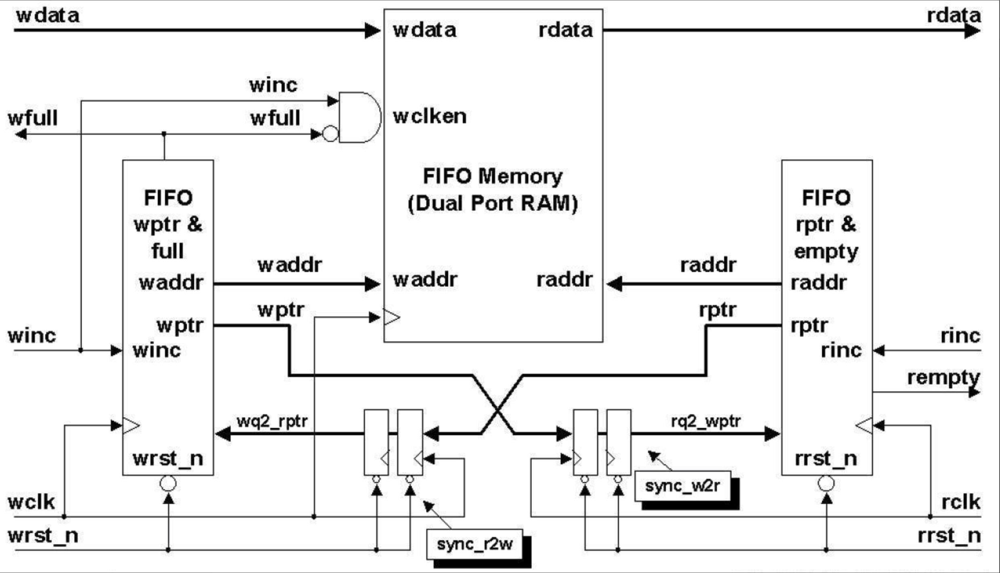
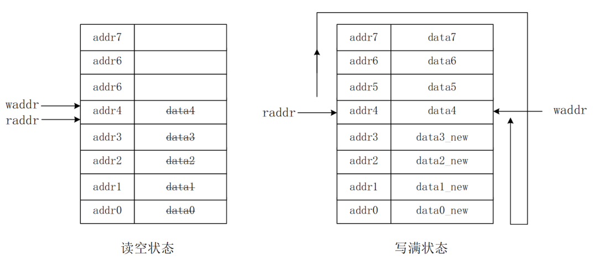
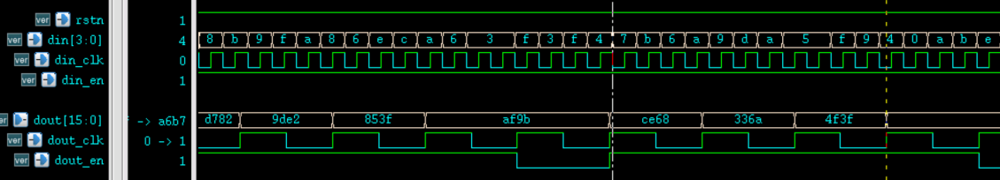

FIFO（First In First Out）是异步数据传输时经常使用的存储器。该存储器的特点是数据先进先出（后进后出）。其实，多位宽数据的异步传输问题，无论是从快时钟到慢时钟域，还是从慢时钟到快时钟域，都可以使用 FIFO 处理。
FIFO 原理
工作流程
复位之后，在写时钟和状态信号的控制下，数据写入 FIFO 中。RAM 的写地址从 0 开始，每写一次数据写地址指针加一，指向下一个存储单元。当 FIFO 写满后，数据将不能再写入，否则数据会因覆盖而丢失。
FIFO 数据为非空、或满状态时，在读时钟和状态信号的控制下，可以将数据从 FIFO 中读出。RAM 的读地址从 0 开始，每读一次数据读地址指针加一，指向下一个存储单元。当 FIFO 读空后，就不能再读数据，否则读出的数据将是错误的。
FIFO 的存储结构为双口 RAM，所以允许读写同时进行。典型异步 FIFO 结构图如下所示。端口及内部信号将在代码编写时进行说明。

读写时刻
关于写时刻，只要 FIFO 中数据为非满状态，就可以进行写操作；如果 FIFO 为满状态，则禁止再写数据。
关于读时刻，只要 FIFO 中数据为非空状态，就可以进行读操作；如果 FIFO 为空状态，则禁止再读数据。
不管怎样，一段正常读写 FIFO 的时间段，如果读写同时进行，则要求写 FIFO 速率不能大于读速率。
读空状态
开始复位时，FIFO 没有数据，空状态信号是有效的。当 FIFO 中被写入数据后，空状态信号拉低无效。当读数据地址追赶上写地址，即读写地址都相等时，FIFO 为空状态。
因为是异步 FIFO，所以读写地址进行比较时，需要同步打拍逻辑，就需要耗费一定的时间。所以空状态的指示信号不是实时的，会有一定的延时。如果在这段延迟时间内又有新的数据写入 FIFO，就会出现空状态指示信号有效，但是 FIFO 中其实存在数据的现象。
严格来讲该空状态指示是错误的。但是产生空状态的意义在于防止读操作对空状态的 FIFO 进行数据读取。产生空状态信号时，实际 FIFO 中有数据，相当于提前判断了空状态信号，此时不再进行读 FIFO 数据操作也是安全的。所以，该设计从应用上来说是没有问题的。
写满状态
开始复位时，FIFO 没有数据，满信号是无效的。当 FIFO 中被写入数据后，此时读操作不进行或读速率相对较慢，只要写数据地址超过读数据地址一个 FIFO 深度时，便会产生满状态信号。此时写地址和读地址也是相等的，但是意义是不一样的。

此时经常使用多余的 1bit 分别当做读写地址的拓展位，来区分读写地址相同的时候，FIFO 的状态是空还是满状态。当读写地址与拓展位均相同的时候，表明读写数据的数量是一致的，则此时 FIFO 是空状态。如果读写地址相同，拓展位为相反数，表明写数据的数量已经超过读数据数量的一个 FIFO 深度了，此时 FIFO 是满状态。当然，此条件成立的前提是空状态禁止读操作、满状态禁止写操作。
同理，由于异步延迟逻辑的存在，满状态信号也不是实时的。但是也相当于提前判断了满状态信号，此时不再进行写 FIFO 操作也不会影响应用的正确性。
FIFO 设计
设计要求
为设计应用于各种场景的 FIFO，这里对设计提出如下要求：
- (1) FIFO 深度、宽度参数化，输出空、满状态信号，并输出一个可配置的满状态信号。当 FIFO 内部数据达到设置的参数数量时，拉高该信号。
- (2) 输入数据和输出数据位宽可以不一致，但要保证写数据、写地址位宽与读数据、读地址位宽的一致性。例如写数据位宽 8bit，写地址位宽为 6bit（64 个数据）。如果输出数据位宽要求 32bit，则输出地址位宽应该为 4bit（16 个数据）。
- (3) FIFO 是异步的，即读写控制信号来自不同的时钟域。输出空、满状态信号之前，读写地址信号要用格雷码做同步处理，通过减少多位宽信号的翻转来减少打拍法同步时数据的传输错误。 格雷码与二进制之间的转换如下图所示。

双口 RAM 设计
RAM 端口参数可配置，读写位宽可以不一致。建议 memory 数组定义时，以长位宽地址、短位宽数据的参数为参考，方便数组变量进行选择访问。
Verilog 描述如下。
实例
#( parameter AWI = 5 ,
parameter AWO = 7 ,
parameter DWI = 64 ,
parameter DWO = 16
)
(
input CLK_WR , //写时钟
input WR_EN , //写使能
input [AWI-1:0] ADDR_WR ,//写地址
input [DWI-1:0] D , //写数据
input CLK_RD , //读时钟
input RD_EN , //读使能
input [AWO-1:0] ADDR_RD ,//读地址
output reg [DWO-1:0] Q //读数据
);
//输出位宽大于输入位宽，求取扩大的倍数及对应的位数
parameter EXTENT = DWO/DWI ;
parameter EXTENT_BIT = AWI-AWO > 0 ? AWI-AWO : 'b1 ;
//输入位宽大于输出位宽，求取缩小的倍数及对应的位数
parameter SHRINK = DWI/DWO ;
parameter SHRINK_BIT = AWO-AWI > 0 ? AWO-AWI : 'b1;
genvar i ;
generate
//数据位宽展宽（地址位宽缩小）
if (DWO >= DWI) begin
//写逻辑，每时钟写一次
reg [DWI-1:0] mem [(1<<AWI)-1 : 0] ;
always @(posedge CLK_WR) begin
if (WR_EN) begin
mem[ADDR_WR] <= D ;
end
end
//读逻辑，每时钟读 4 次
for (i=0; i<EXTENT; i=i+1) begin
always @(posedge CLK_RD) begin
if (RD_EN) begin
Q[(i+1)*DWI-1: i*DWI] <= mem[(ADDR_RD*EXTENT) + i ] ;
end
end
end
end
//=================================================
//数据位宽缩小（地址位宽展宽）
else begin
//写逻辑，每时钟写 4 次
reg [DWO-1:0] mem [(1<<AWO)-1 : 0] ;
for (i=0; i<SHRINK; i=i+1) begin
always @(posedge CLK_WR) begin
if (WR_EN) begin
mem[(ADDR_WR*SHRINK)+i] <= D[(i+1)*DWO -1: i*DWO] ;
end
end
end
//读逻辑，每时钟读 1 次
always @(posedge CLK_RD) begin
if (RD_EN) begin
Q <= mem[ADDR_RD] ;
end
end
end
endgenerate
endmodule
计数器设计
计数器用于产生读写地址信息，位宽可配置，不需要设置结束值，让其溢出后自动重新计数即可。Verilg 描述如下。
实例
#(parameter W )
(
input rstn ,
input clk ,
input en ,
output [W-1:0] count
);
reg [W-1:0] count_r ;
always @(posedge clk or negedge rstn) begin
if (!rstn) begin
count_r <= 'b0 ;
end
else if (en) begin
count_r <= count_r + 1'b1 ;
end
end
assign count = count_r ;
endmodule
FIFO 设计
该模块为 FIFO 的主体部分，产生读写控制逻辑，并产生空、满、可编程满状态信号。
鉴于篇幅原因，这里只给出读数据位宽大于写数据位宽的逻辑代码，写数据位宽大于读数据位宽的代码描述详见附件。
实例
#( parameter AWI = 5 ,
parameter AWO = 3 ,
parameter DWI = 4 ,
parameter DWO = 16 ,
parameter PROG_DEPTH = 16) //可设置深度
(
input rstn, //读写使用一个复位
input wclk, //写时钟
input winc, //写使能
input [DWI-1: 0] wdata, //写数据
input rclk, //读时钟
input rinc, //读使能
output [DWO-1 : 0] rdata, //读数据
output wfull, //写满标志
output rempty, //读空标志
output prog_full //可编程满标志
);
//输出位宽大于输入位宽，求取扩大的倍数及对应的位数
parameter EXTENT = DWO/DWI ;
parameter EXTENT_BIT = AWI-AWO ;
//输出位宽小于输入位宽，求取缩小的倍数及对应的位数
parameter SHRINK = DWI/DWO ;
parameter SHRINK_BIT = AWO-AWI ;
//==================== push/wr counter ===============
wire [AWI-1:0] waddr ;
wire wover_flag ; //多使用一位做写地址拓展
ccnt #(.W(AWI+1))
u_push_cnt(
.rstn (rstn),
.clk (wclk),
.en (winc && !wfull), //full 时禁止写
.count ({wover_flag, waddr})
);
//============== pop/rd counter ===================
wire [AWO-1:0] raddr ;
wire rover_flag ; //多使用一位做读地址拓展
ccnt #(.W(AWO+1))
u_pop_cnt(
.rstn (rstn),
.clk (rclk),
.en (rinc & !rempty), //empyt 时禁止读
.count ({rover_flag, raddr})
);
//==============================================
//窄数据进，宽数据出
generate
if (DWO >= DWI) begin : EXTENT_WIDTH
//格雷码转换
wire [AWI:0] wptr = ({wover_flag, waddr}>>1) ^ ({wover_flag, waddr}) ;
//将写数据指针同步到读时钟域
reg [AWI:0] rq2_wptr_r0 ;
reg [AWI:0] rq2_wptr_r1 ;
always @(posedge rclk or negedge rstn) begin
if (!rstn) begin
rq2_wptr_r0 <= 'b0 ;
rq2_wptr_r1 <= 'b0 ;
end
else begin
rq2_wptr_r0 <= wptr ;
rq2_wptr_r1 <= rq2_wptr_r0 ;
end
end
//格雷码转换
wire [AWI-1:0] raddr_ex = raddr << EXTENT_BIT ;
wire [AWI:0] rptr = ({rover_flag, raddr_ex}>>1) ^ ({rover_flag, raddr_ex}) ;
//将读数据指针同步到写时钟域
reg [AWI:0] wq2_rptr_r0 ;
reg [AWI:0] wq2_rptr_r1 ;
always @(posedge wclk or negedge rstn) begin
if (!rstn) begin
wq2_rptr_r0 <= 'b0 ;
wq2_rptr_r1 <= 'b0 ;
end
else begin
wq2_rptr_r0 <= rptr ;
wq2_rptr_r1 <= wq2_rptr_r0 ;
end
end
//格雷码反解码
//如果只需要空、满状态信号，则不需要反解码
//因为可编程满状态信号的存在，地址反解码后便于比较
reg [AWI:0] wq2_rptr_decode ;
reg [AWI:0] rq2_wptr_decode ;
integer i ;
always @(*) begin
wq2_rptr_decode[AWI] = wq2_rptr_r1[AWI];
for (i=AWI-1; i>=0; i=i-1) begin
wq2_rptr_decode[i] = wq2_rptr_decode[i+1] ^ wq2_rptr_r1[i] ;
end
end
always @(*) begin
rq2_wptr_decode[AWI] = rq2_wptr_r1[AWI];
for (i=AWI-1; i>=0; i=i-1) begin
rq2_wptr_decode[i] = rq2_wptr_decode[i+1] ^ rq2_wptr_r1[i] ;
end
end
//读写地址、拓展位完全相同是，为空状态
assign rempty = (rover_flag == rq2_wptr_decode[AWI]) &&
(raddr_ex >= rq2_wptr_decode[AWI-1:0]);
//读写地址相同、拓展位不同，为满状态
assign wfull = (wover_flag != wq2_rptr_decode[AWI]) &&
(waddr >= wq2_rptr_decode[AWI-1:0]) ;
//拓展位一样时，写地址必然不小于读地址
//拓展位不同时，写地址部分比如小于读地址，实际写地址要增加一个FIFO深度
assign prog_full = (wover_flag == wq2_rptr_decode[AWI]) ?
waddr - wq2_rptr_decode[AWI-1:0] >= PROG_DEPTH-1 :
waddr + (1<<AWI) - wq2_rptr_decode[AWI-1:0] >= PROG_DEPTH-1;
//双口 ram 例化
ramdp
#( .AWI (AWI),
.AWO (AWO),
.DWI (DWI),
.DWO (DWO))
u_ramdp
(
.CLK_WR (wclk),
.WR_EN (winc & ！wfull), //写满时禁止写
.ADDR_WR (waddr),
.D (wdata[DWI-1:0]),
.CLK_RD (rclk),
.RD_EN (rinc & !rempty), //读空时禁止读
.ADDR_RD (raddr),
.Q (rdata[DWO-1:0])
);
end
//==============================================
//big in and small out
/*
else begin: SHRINK_WIDTH
……
end
*/
endgenerate
endmodule
FIFO 调用
下面可以调用设计的 FIFO，完成多位宽数据传输的异步处理。
写数据位宽为 4bit，写深度为 32。
读数据位宽为 16bit，读深度为 8，可配置 full 深度为 16。
实例
input rstn,
input [4-1: 0] din, //异步写数据
input din_clk, //异步写时钟
input din_en, //异步写使能
output [16-1 : 0] dout, //同步后数据
input dout_clk, //同步使用时钟
input dout_en ); //同步数据使能
wire fifo_empty, fifo_full, prog_full ;
wire rd_en_wir ;
wire [15:0] dout_wir ;
//读空状态时禁止读，否则一直读
assign rd_en_wir = fifo_empty ? 1'b0 : 1'b1 ;
fifo #(.AWI(5), .AWO(3), .DWI(4), .DWO(16), .PROG_DEPTH(16))
u_buf_s2b(
.rstn (rstn),
.wclk (din_clk),
.winc (din_en),
.wdata (din),
.rclk (dout_clk),
.rinc (rd_en_wir),
.rdata (dout_wir),
.wfull (fifo_full),
.rempty (fifo_empty),
.prog_full (prog_full));
//缓存同步后的数据和使能
reg dout_en_r ;
always @(posedge dout_clk or negedge rstn) begin
if (!rstn) begin
dout_en_r <= 1'b0 ;
end
else begin
dout_en_r <= rd_en_wir ;
end
end
assign dout = dout_wir ;
assign dout_en = dout_en_r ;
endmodule
testbench
实例
`define SMALL2BIG
module test ;
`ifdef SMALL2BIG
reg rstn ;
reg clk_slow, clk_fast ;
reg [3:0] din ;
reg din_en ;
wire [15:0] dout ;
wire dout_en ;
//reset
initial begin
clk_slow = 0 ;
clk_fast = 0 ;
rstn = 0 ;
#50 rstn = 1 ;
end
//读时钟 clock_slow 较快于写时钟 clk_fast 的 1/4
//保证读数据稍快于写数据
parameter CYCLE_WR = 40 ;
always #(CYCLE_WR/2/4) clk_fast = ~clk_fast ;
always #(CYCLE_WR/2-1) clk_slow = ~clk_slow ;
//data generate
initial begin
din = 16'h4321 ;
din_en = 0 ;
wait (rstn) ;
//(1) 测试 full、prog_full、empyt 信号
force test.u_data_buf2.u_buf_s2b.rinc = 1'b0 ;
repeat(32) begin
@(negedge clk_fast) ;
din_en = 1'b1 ;
din = {$random()} % 16;
end
@(negedge clk_fast) din_en = 1'b0 ;
//(2) 测试数据读写
#500 ;
rstn = 0 ;
#10 rstn = 1 ;
release test.u_data_buf2.u_buf_s2b.rinc;
repeat(100) begin
@(negedge clk_fast) ;
din_en = 1'b1 ;
din = {$random()} % 16;
end
//(3) 停止读取再一次测试 empyt、full、prog_full 信号
force test.u_data_buf2.u_buf_s2b.rinc = 1'b0 ;
repeat(18) begin
@(negedge clk_fast) ;
din_en = 1'b1 ;
din = {$random()} % 16;
end
end
fifo_s2b u_data_buf2(
.rstn (rstn),
.din (din),
.din_clk (clk_fast),
.din_en (din_en),
.dout (dout),
.dout_clk (clk_slow),
.dout_en (dout_en));
`else
`endif
//stop sim
initial begin
forever begin
#100;
if ($time >= 5000) $finish ;
end
end
endmodule
仿真分析
根据 testbench 中的 3 步测试激励，分析如下：
测试 (1) : FIFO 端口及一些内部信号时序结果如下。
由图可知，FIFO 内部开始写数据，空状态信号拉低之前有一段时间延迟，这是同步读写地址信息导致的。
由于此时没有进行读 FIFO 操作，相对于写数据操作，full 和 prog_full 拉高几乎没有延迟。

测试 (2) : FIFO 同时进行读写时，数字顶层异步处理模块的端口信号如下所示，两图分别显示了数据开始传输、结束传输时的读取过程。
由图可知，数据在开始、末尾均能正确传输，完成了不同时钟域之间多位宽数据的异步处理。


测试 (3) ：整个 FIFO 读写行为及读停止的时序仿真图如下所示。
由图可知，读写同时进行时，读空状态信号 rempty 会拉低，表明 FIFO 中有数据写入。一方面读数据速率稍高于写速率，且数据之间传输会有延迟，所以中间过程中 rempty 会有拉高的行为。
读写过程中，full 与 prog_full 信号一直为低，说明 FIFO 中数据并没有到达一定的数量。当停止读操作后，两个 full 信号不久便拉高，表明 FIFO 已满。仔细对比读写地址信息，FIFO 行为没有问题。

完整的 FIFO 设计见附件，包括输入数据位宽小于输出数据位宽时的异步设计和仿真。

点我分享笔记